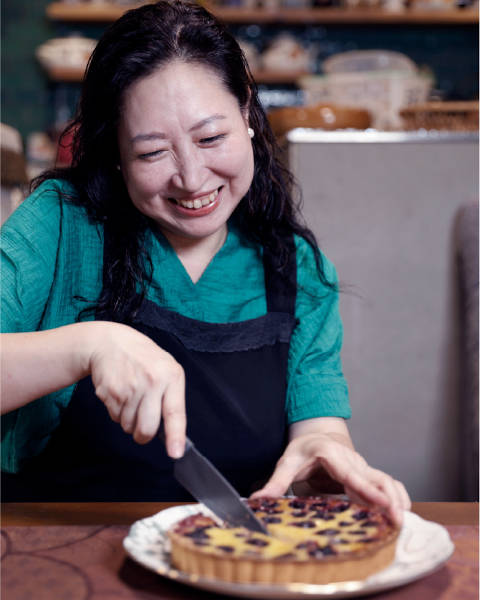
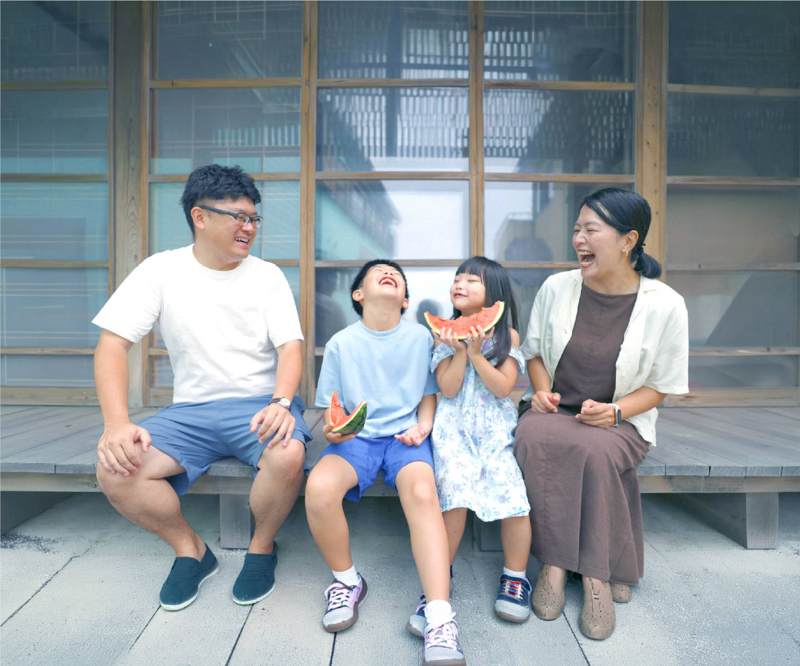
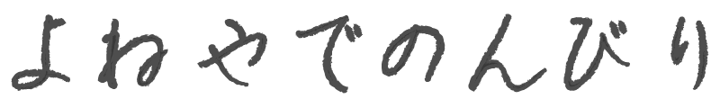
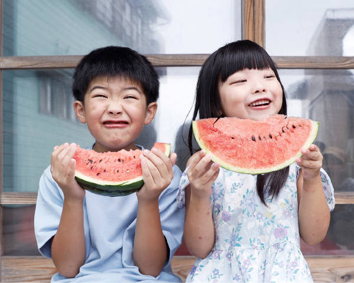
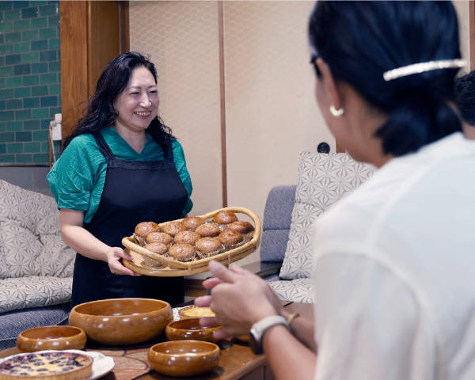

民宿よねやの今までとこれから

お客様の賑わいとともに140年。世代が変わっても家族のように愛されてきた海辺の宿です。かつて長屋だけだった場所はカフェも併設され、私は義母を手伝いながら手作りスイーツもお出しするようになりました。いつしかお客様の笑顔に支えられるようになり、これからもそんな笑顔あふれる空間で、安心・安全に皆様をお迎えいたします。


玄関を開けると、懐かしい香りがする。海からの潮風が肌にあたり、心地よい。目の前は海。水平線から続く広大な空があなたを包んでくれる最高のロケーション。ここは民宿よねやです。

お客様の賑わいとともに140年。世代が変わっても家族のように愛されてきた海辺の宿です。かつて長屋だけだった場所はカフェも併設され、私は義母を手伝いながら手作りスイーツもお出しするようになりました。いつしかお客様の笑顔に支えられるようになり、これからもそんな笑顔あふれる空間で、安心・安全に皆様をお迎えいたします。


「ただいま」「おかえりなさい」―― そんな言葉が自然とこぼれる、あたたかな宿です。庭先には季節の花が咲き、都会の喧騒を忘れられるひととき。お一人様からご家族連れまで、ゆっくりとお過ごしください。
館内・客室の詳細 →
夕方には、地元で獲れたての海の幸が食卓を彩ります。日々の疲れを忘れ、ゆったりと安らぐひとときをお過ごしください。
お料理の詳細 → 過ごし方のご提案 →